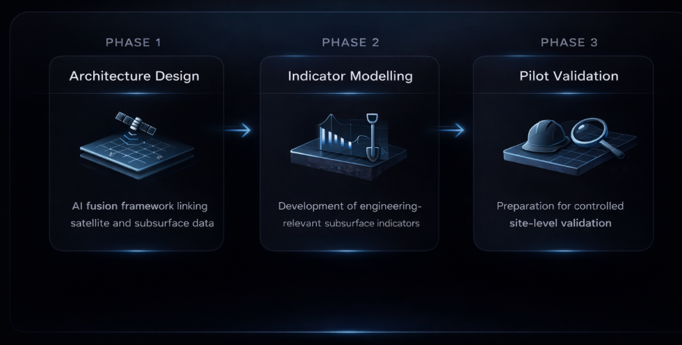

A clearer picture.
From space to subsurface.
Gaia is a non-invasive, AI-driven decision-support system for construction and infrastructure. It brings site-wide insight by combining satellite-derived ground behavior with on-site subsurface sensing, then translating it into practical early-stage indicators.
EARLY INSIGHT. BETTER-INFORMED DECISIONS.
Understand the ground.
Before the groundwork.
Gaia turns radar signals into engineering-relevant indicators that can help reduce uncertainty, avoid unnecessary work, and focus investigations where it matters most.
Signals become insight.
From data inputs to AI fusion to usable outputs — built for real engineering workflows.
The goal: give engineers a fast, data-driven “first picture” of the site, so decisions are better informed from day one.
Better insight. Practical impact.
Clear value for engineers, owners, and geotechnical partners — with minimal disruption to existing workflows.
From architecture to validation.
Gaia is advancing through structured development stages to establish early-stage subsurface intelligence.

Your next project starts
with a clearer picture.
Connect with us to discuss Gaia, your site, or a potential collaboration.